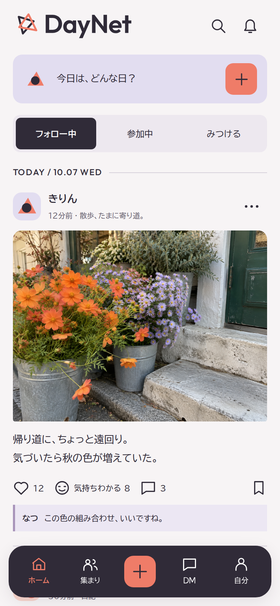
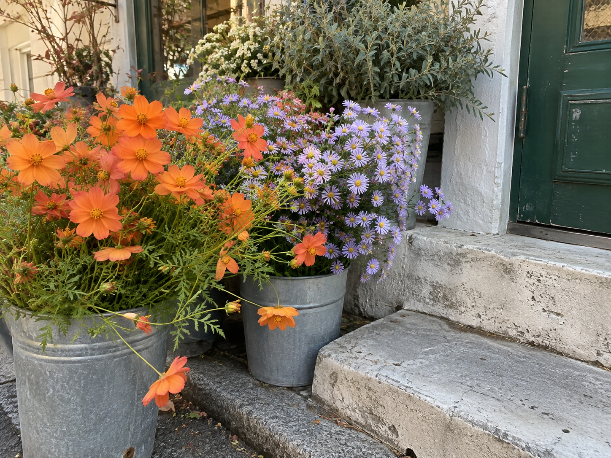
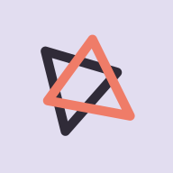

A SOCIAL PLACE FOR EVERYDAY
写真と動画で、
日常をつなぐ。
日記を書く。趣味で集まる。
匿名の表示名で、気軽に話す。
TWO TRIANGLES. A SHARED SPACE.違う一日が、同じ場所で重なる。
DAYNET / BRAND & PRODUCTEDITION 04 — 2026
01 / DAILY FEED

02 / MEET THE PERSON
プロフィールから、
話しかけるきっかけを。

TYPE / OPEN & FRIENDLYOutfit Aa
BIZ UDPGothic / 読みやすい和文
COLOR / A LITTLE WARMTH#EF7C68 / #E2DDF0 / #302B38

DayNetとCinemiXは、同じ系列のアプリです。DESIGN PREVIEW / FICTIONAL DATA